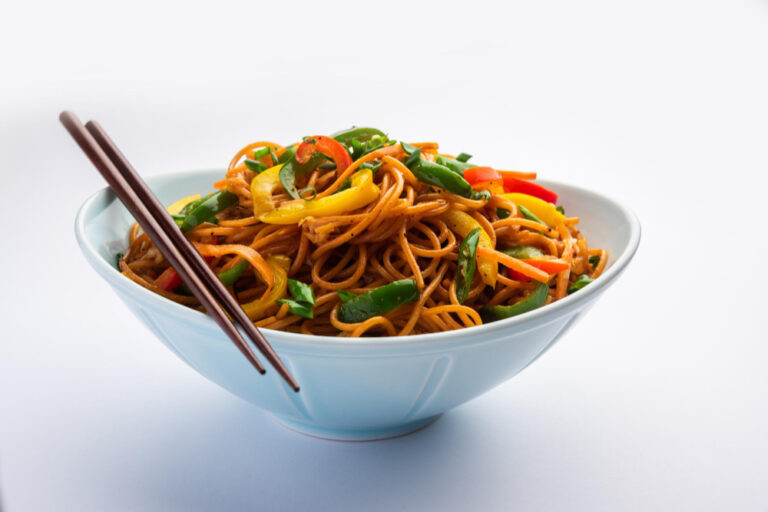
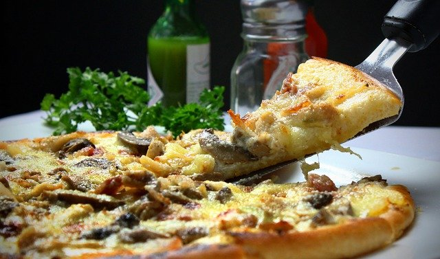
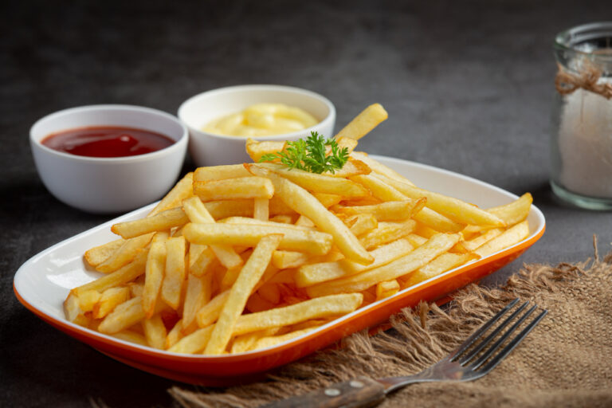
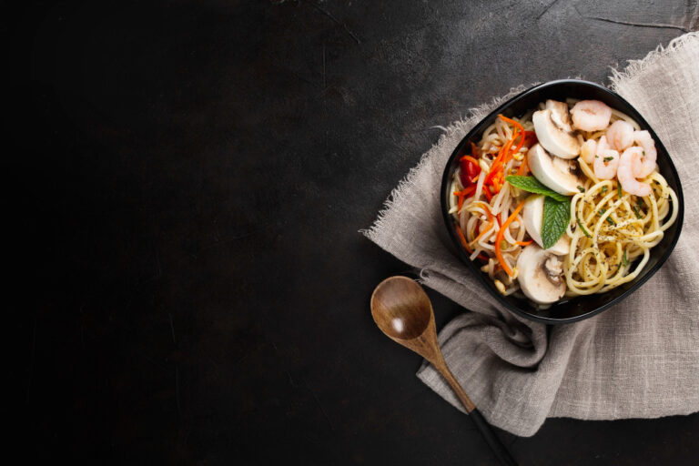

Chinese Cuisine
Chinese cuisine is among the most varied among the world’s food cultures. Typically, Chinese meals consist of rice or noodles. However, in many parts of China, Chinese dumplings are a significant component of the local cuisine. In addition, Chinese cuisine uses a wide variety of vegetables stir-fried with herbs and spices. Chinese cooking methods have inspired other foods from Korea, the Philippines, Thailand, and Vietnam. Due to Chinese food’s popularity, there are Chinese restaurants in a wide range of cities worldwide.
Italian Cuisine
World-renowned chefs often refer to Italy as having the best cuisine. One of the top well-liked and widely consumed food worldwide is pasta in Italian cuisine. Pasta, rice, tomatoes, and cheese are the fundamental ingredients of well-known Italian cuisine. Different kinds of meat, seafood, or sausages are often used in regional variations, along with appetising sauces. Oregano, basil, or other fresh herbs can be used to flavour these. Pizza, pasta, delectable Italian ice cream, and meals with Parmesan cheese are examples of Italian cuisine.
French cuisine
Many people consider French food to be among the best in the world. French cuisine uses butter, cream, wine, herbs, chocolate, and vegetables. In addition, French pastries, cheese, bread, and wine are well-known worldwide.
Japanese cuisine
Japanese cuisine has emerged as one of the most significant food categories worldwide. Most recipes that include grilled fish, pickled vegetables, or deep-fried veggies are typically served with boiled rice. Additionally, tofu is a crucial ingredient in traditional Japanese cuisine.
Some of the top famous Japanese cuisines are :